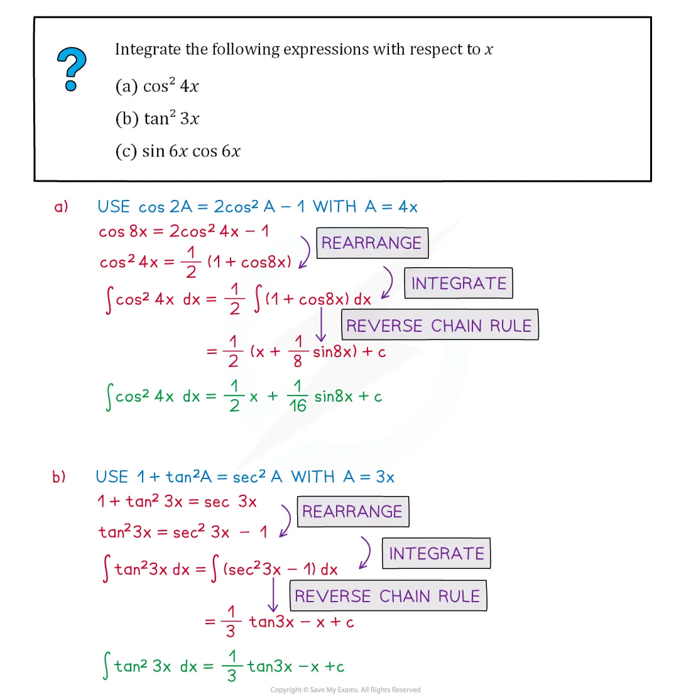
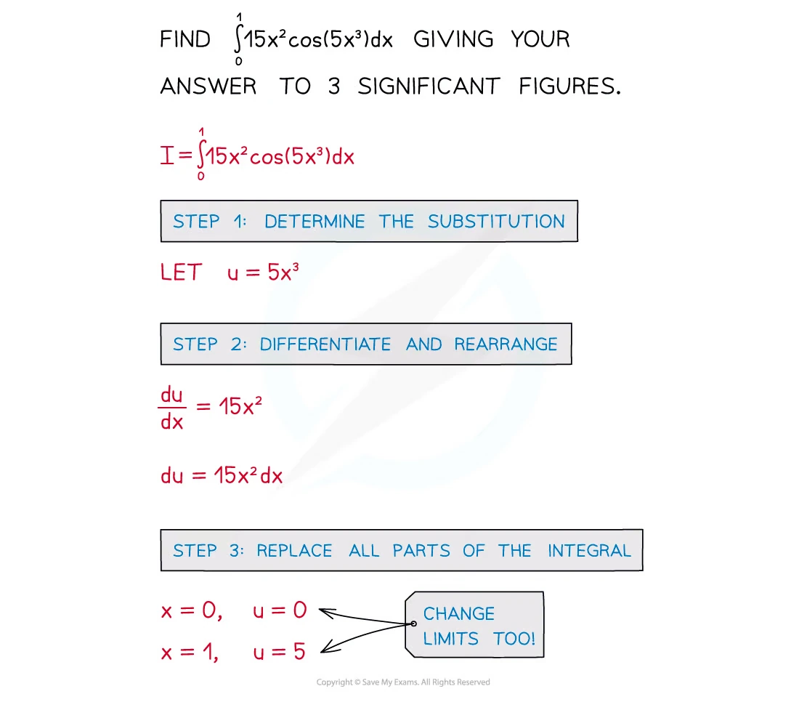
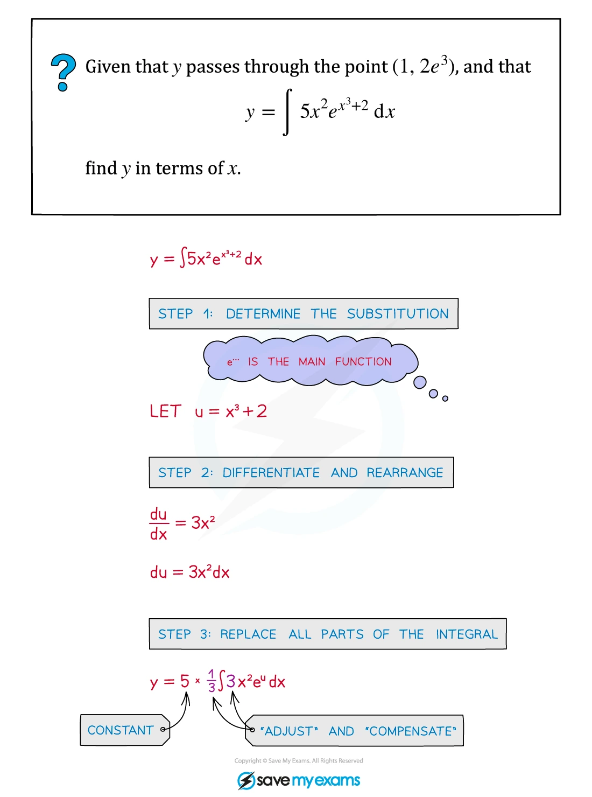

2.5 Integration
Reverse differentiation · trigonometric integration · definite integrals · trapezium rule
本页依据 9709 Mathematics 2026–2027 syllabus 2.5：把 reverse differentiation 扩展到 e^{ax+b}、1/(ax+b)、\sin(ax+b)、\cos(ax+b) 和 \sec^2(ax+b)；使用 trigonometric relationships 进行 integration；理解并使用 trapezium rule 估计 definite integral，并判断 over-estimate 或 under-estimate。
工作区没有独立的 Paper 2 note PDF，因此 worked examples 使用同一套 Integration note PDF 中已经独立提取的相关原始图片；每个例题单独成卡。真题全部来自本地 Paper 2 原始 PDF，题干只把 PDF 排版规范为 LaTeX，没有改写或编造题目。
1. Core knowledge
Reverse differentiation
\begin{aligned} \int e^{ax+b}\,dx&=\frac1a e^{ax+b}+C,\\ \int\frac{1}{ax+b}\,dx&=\frac1a\ln|ax+b|+C,\\ \int\sin(ax+b)\,dx&=-\frac1a\cos(ax+b)+C,\\ \int\cos(ax+b)\,dx&=\frac1a\sin(ax+b)+C,\\ \int\sec^2(ax+b)\,dx&=\frac1a\tan(ax+b)+C. \end{aligned}
Paper 2 不要求 general substitution method；这里的重点是认出 reverse chain rule，并把 coefficient a 除掉。
Worked example · Integration note p.13

Trigonometric relationships before integrating
常用恒等式包括
\sin^2x=\frac{1-\cos2x}{2}, \qquad \cos^2x=\frac{1+\cos2x}{2},
以及
\sin2x=2\sin x\cos x, \qquad \sin x\cot\frac{x}{2}=1+\cos x.
先把 integrand 化成 standard integral，再积分；不要在还没有化简时直接套公式。
Worked example · Integration note p.19

Definite integration
若 F'(x)=f(x)，则
\int_a^b f(x)\,dx=F(b)-F(a).
每一步都保留上下限；若出现 logarithm，要使用
\ln u-\ln v=\ln\left(\frac uv\right).
Worked example · Integration note p.22

Trapezium rule
把区间 [a,b] 分成 n 个等宽小区间，h=(b-a)/n，则
\int_a^b f(x)\,dx \approx\frac h2\left[y_0+y_n+2(y_1+y_2+\cdots+y_{n-1})\right].
若 f 在区间内 concave down，chords 位于 curve 下方，trapezium rule 给出 under-estimate；若 concave up，则给出 over-estimate。
2. Verified Paper 2 past-paper questions
以下 5 组题均已在本地 Paper 2 原始 PDF 及对应 mark scheme 中核对；题目没有因为数量不足而补造。
Question 1 · 9709/21/M/J/20 Q7(a–b)
- Find the quotient when
9x^3-6x^2-20x+1
is divided by (3x+2), and show that the remainder is 9.
- Hence find
\int_1^6\frac{9x^3-6x^2-20x+1}{3x+2}\,dx,
giving the answer in the form a+\ln b where a and b are integers. [3+5]
Show detailed mark scheme answer
- Polynomial division gives
9x^3-6x^2-20x+1=(3x+2)(3x^2-4x-4)+9.
Therefore
\boxed{\text{quotient}=3x^2-4x-4,\qquad \text{remainder}=9}.
- Use the division result:
\frac{9x^3-6x^2-20x+1}{3x+2}=3x^2-4x-4+\frac9{3x+2}.
Hence
\begin{aligned} \int_1^6\frac{9x^3-6x^2-20x+1}{3x+2}\,dx &=\left[x^3-2x^2-4x+3\ln(3x+2)\right]_1^6\\ &=(120+3\ln20)-(-5+3\ln5)\\ &=125+3\ln4\\ &=\boxed{125+\ln64}. \end{aligned}PastPaper/2020/2020/9709-s20-qp-21.pdf, Q7(a–b), and matching mark scheme.
Question 2 · 9709/22/M/J/20 Q8(c)
Find the exact value of
\int_{\frac14\pi}^{\frac12\pi}3\sin x\cot\frac12x\,dx.
[5]
Show detailed mark scheme answer
Use \sin x=2\sin(x/2)\cos(x/2):
\sin x\cot\frac x2 =2\sin\frac x2\cos\frac x2\cdot\frac{\cos(x/2)}{\sin(x/2)} =2\cos^2\frac x2 =1+\cos x.
Therefore the integral is
\begin{aligned} \int_{\pi/4}^{\pi/2}3(1+\cos x)\,dx &=\left[3x+3\sin x\right]_{\pi/4}^{\pi/2}\\ &=3\left(\frac\pi2+1-\frac\pi4-\frac{\sqrt2}{2}\right). \end{aligned}
Hence
\boxed{\frac34\pi+3-\frac32\sqrt2}.PastPaper/2020/2020/9709-s20-qp-22.pdf, Q8(c), and matching mark scheme.
Question 3 · 9709/22/M/J/22 Q4(a–b)
- Use the trapezium rule with three intervals to show that the value of
\int_1^4\ln x\,dx
is approximately \ln12.
- Use a graph of y=\ln x to show that \ln12 is an under-estimate of the true value of the integral. [4+2]
Show detailed mark scheme answer
- With three intervals on [1,4], h=1 and the values are
y_0=\ln1,quad y_1=\ln2,quad y_2=\ln3,quad y_3=\ln4.
The trapezium rule gives
\begin{aligned} T_3 &=\frac12\left[\ln1+2\ln2+2\ln3+\ln4\right]\\ &=\frac12\left[0+2\ln2+2\ln3+2\ln2\right]\\ &=\ln2+\ln3+\ln2\\ &=\boxed{\ln12}. \end{aligned}
- The graph y=\ln x is concave down on x>0. Therefore each straight chord used by the trapezium rule lies below the curve, so the trapezium areas are smaller than the true area. Hence \ln12 is
PastPaper/2022/2022/9709_s22_qp_22.pdf, Q4(a–b), and matching mark scheme.
3. 2024 Paper 2 additions
以下题目来自新增的 2024 Paper 2 原始 PDF，并已与对应 mark scheme 核对。
Question 4 · 9709/22/M/J/24 Q5(b)
The polynomial p(x) is defined by
p(x)=9x^3+18x^2+5x+4.
Find the value of
\int_0^2\frac{p(x)}{3x+2}\,dx,
giving your answer in the form a+\ln b where a and b are integers. [5]
Show detailed mark scheme answer
From polynomial division,
p(x)=(3x+2)(3x^2+4x-1)+6.
Thus
\frac{p(x)}{3x+2}=3x^2+4x-1+\frac6{3x+2}.
Therefore
\begin{aligned} \int_0^2\frac{p(x)}{3x+2}\,dx &=\left[x^3+2x^2-x+2\ln(3x+2)\right]_0^2\\ &=(8+8-2+2\ln8)-2\ln2\\ &=14+2\ln4\\ &=\boxed{14+\ln16}. \end{aligned}PastPaper/2024/2024/qp-202406-mathematics-p22.pdf, Q5(b), and matching mark scheme.
Question 5 · 9709/21/M/J/24 Q7(a–b)
The polynomial p(x) is defined by
p(x)=9x^3+6x^2+12x+k,
where k is a constant.
Find the quotient when p(x) is divided by (3x+2) and show that the remainder is (k-8).
It is given that
\int_1^6\frac{p(x)}{3x+2}\,dx=a+\ln64,
where a is an integer. Find the values of a and k. [3+6]
Show detailed mark scheme answer
- Polynomial division gives
9x^3+6x^2+12x+k=(3x+2)(3x^2+4)+(k-8).
Hence
\boxed{\text{quotient}=3x^2+4,\qquad \text{remainder}=k-8}.
- Using the result from (a),
\frac{p(x)}{3x+2}=3x^2+4+\frac{k-8}{3x+2}.
Integrate and apply the limits:
\begin{aligned} \int_1^6\frac{p(x)}{3x+2}\,dx &=\left[x^3+4x+\frac{k-8}{3}\ln(3x+2)\right]_1^6\\ &=235+\frac{k-8}{3}\ln4. \end{aligned}
Since \ln64=3\ln4, comparison gives
\frac{k-8}{3}=3 \quad\Longrightarrow\quad \boxed{k=17}.
The integer part is therefore
\boxed{a=235}.PastPaper/2024/2024/qp-202406-mathematics-p21.pdf, Q7(a–b), and matching mark scheme.